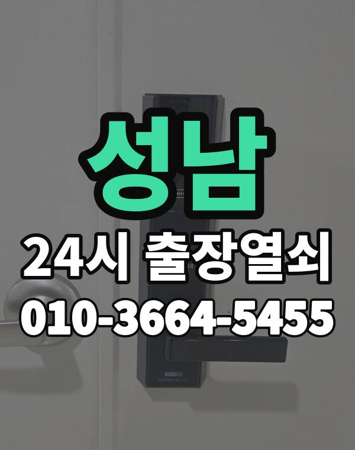

성남 출장열쇠, 이런 동네입니다
성남은 분당, 판교 아파트와 사무실, 수정구, 중원구 언덕 주택가, 위례 새 아파트까지 동네마다 분위기가 다릅니다.
분당 오래된 단지는 도어락 교체 시기가 된 집이 많습니다.

성남시 출장 가는 동네
- 정자동
- 서현동
- 수내동
- 야탑동
- 이매동
- 구미동
- 백현동
- 삼평동
- 운중동
- 태평동
- 신흥동
- 단대동
- 위례동
- 금광동
- 은행동
- 상대원동
- 도촌동
정자동 출장열쇠, 서현동 열쇠집처럼 동네 이름으로 찾으셨어도 같은 곳입니다.
적혀 있지 않은 동네도 성남시 안이면 다 갑니다.
성남에서 맡기실 수 있는 일
성남 출장, 이렇게 알려주세요
수정구, 중원구는 언덕과 계단이 많아 차를 세울 곳을 같이 알려주세요.
판교 사무실 출입문도 출동합니다.
서현역, 정자역, 야탑역, 판교역, 모란역 근처라고 말씀해 주셔도 위치 잡기가 쉬워집니다.
가까운 역이나 큰 건물, 단지 이름을 같이 알려주세요.
- 주소와 건물 이름 (아파트면 동, 호수)
- 문 종류, 번호판이 켜지는지
- 사시는 걸 확인할 신분증이나 우편물이 있는지
전화부터 작업까지 순서는 이용안내에 적어 두었습니다.
성남 출장열쇠 관련 글
- 성남 백현동 보조키가 잠겨 현관문이 안 열릴 때 확인할 것과 출장열쇠 호출
- 성남 백현동 사무실 카드 리더가 인식이 안 될 때 출장열쇠 점검 순서
- 성남 백현동 한파에 도어락이 꺼지거나 반응이 느릴 때 대처법
- 성남 백현동 새벽 근무 마치고 돌아왔는데 번호판이 반응하지 않을 때
- 성남 백현동 현관문이 안 열려요, 번호판 불빛과 소리로 원인 찾는 법
- 성남 백현동 수험생 자녀 늦은 귀가 도어락 문 관리와 출장열쇠 부르는 요령
- 성남 백현동 도어락 건전지 알카라인 리튬 어떤 걸 골라야 할까
- 성남 백현동 테라스와 발코니 샷시 잠금장치 점검하는 방법
- 성남 백현동 독서실 스터디카페 출입문이 잠겼을 때 판교역 근처 대처법
- 성남 백현동 빌라·다세대 공동 현관과 세대 출입문이 잠겼을 때 대처법
- 성남 백현동 출장열쇠 기다리는 동안 문 앞에서 해 두면 좋은 일
- 성남 단대동 집 열쇠를 중개인에게 맡길 때 확인할 것, 모란역 근처 집 내놓기 전 점검
- 성남 단대동 베란다 미닫이 방문 잠금장치가 안 잠기고 안 열릴 때
- 성남 단대동 화장실 문 걸쇠가 안에서 걸려 안 열릴 때 대처법
- 성남 단대동 단지 정전 때 모든 세대가 겪는 도어락 문제와 대처법
- 성남 단대동 보조키와 도어락을 함께 쓰는 집 문이 안 열릴 때 점검 순서
- 성남 단대동 손님·가사도우미에게 임시 비밀번호 알려줄 때 지켜야 할 순서
- 성남 단대동 현관문이 덜 닫히거나 쿵 소리 날 때, 경첩과 도어클로저 점검
- 성남 단대동 도어락 경고음이 울리고 문이 안 열릴 때 대처법과 출장열쇠
- 성남 단대동 비파손 개방이란 무엇인지 문을 상하지 않게 여는 출장열쇠 방식
- 성남 단대동 도어락 원격 열림 기능 쓸 때 주의할 점과 설정 습관
- 성남 단대동 경로당 마을회관 출입문 열쇠 분실·잠김 때 출장열쇠 이용법
- 성남 단대동 여분 열쇠와 보조 카드 어디에 맡길지 고르는 기준
- 성남 단대동 자취방·쉐어하우스 출입문이 안 열릴 때 확인할 것과 대처법
- 성남 도촌동 카드키·태그 추가 등록하는 법, 가족 수대로 늘리고 초기화할 때 알아둘 것
- 성남 도촌동 카드키 태그 분실했을 때, 잃어버린 도어락 카드 대처와 출장열쇠
- 성남 도촌동 전기 걸쇠 출입문이 안 풀릴 때 확인할 것과 출장 순서
- 성남 도촌동 지문 인식이 자꾸 실패할 때 원인별 확인과 출장열쇠 요청 방법
- 성남 도촌동 이사 후 이전 세입자 비밀번호가 남아 있는지 확인하는 법
- 성남 도촌동 손주가 방문할 때 쓰는 간단한 도어락 번호 정하기
- 성남 도촌동 현관 손잡이가 덜렁거리고 헛돌 때, 문이 잠기기 전에 점검할 것
- 성남 도촌동 김장철 베란다 작업 중 문이 잠겨 못 들어갈 때 대처법
- 성남 도촌동 입주·퇴거할 때 도어락과 열쇠 확인 체크리스트
- 성남 도촌동 이사하고 나서 도어락 번호와 열쇠, 이렇게 정리하세요
- 성남 도촌동 오래된 빌라 목재 현관문 도어락과 문틀 점검 안내
- 성남 도촌동 한여름 낮 문 앞에서 기다릴 때 안전하게 버티는 법과 출장열쇠
- 성남 은행동 아이나 반려동물이 안에 있는데 문이 잠겼을 때 해야 할 일
- 성남 은행동 오래 쓴 실린더가 닳아 열쇠가 헛돌 때 대처법
- 성남 은행동 도어락 비밀번호가 기억나지 않을 때, 가족이 바꾼 번호 찾는 순서
- 성남 은행동 가사도우미 방문 요일별 임시 번호 관리하는 방법
- 성남 은행동 장마철 겨울철 도어락이 오작동할 때, 결로와 습기 대처법
- 성남 은행동 출장열쇠 부를 때 휴대폰 위치 공유 보내는 요령
- 성남 은행동 매립형 문 안쪽 부품 규격 맞추기와 도어락 교체 전 확인
- 성남 은행동 비 오는 밤 문이 안 열릴 때 출장열쇠에 미리 알려둘 것
- 성남 은행동 스마트 초인종 설치할 때 도어락과 함께 확인할 것
- 성남 은행동 봄 꽃가루·황사 뒤 도어락 번호판 버튼이 안 눌릴 때 점검법
- 성남 은행동 여름 열기와 습기에 현관문이 뻑뻑할 때 점검법
- 성남 금광동 학원·교습소 출입문과 강의실 문이 안 열릴 때 확인할 것
- 성남 금광동 관리사무소 퇴근 후 현관문이 잠겼을 때 대처 순서
- 성남 금광동 문 열고 난 뒤 점검할 것 재발 막는 도어락 확인 순서
- 성남 금광동 베란다 미닫이 방문 잠금장치 안 잠기고 안 열릴 때
- 성남 금광동 데드볼트가 안 들어가거나 안 빠질 때 원인과 대처
- 성남 금광동 도어락 경고음이 길게 짧게 울릴 때 소리별로 뜻 구분하기
- 성남 금광동 현관 손잡이가 헐겁거나 헛돌 때 점검과 수리 순서
- 성남 금광동 여행지에서 집 열쇠를 잃어버린 가족을 위한 대처법
- 성남 금광동 열쇠 잃어버리고 문 잠그고 나온 날 출장열쇠 부르는 방법
- 성남 금광동 도어락 수동 잠금 모드가 켜져 번호를 눌러도 안 열릴 때
- 성남 금광동 장마 끝난 뒤 문이 부풀어 문틀에 끼는 현관문 확인
- 성남 금광동 도배·페인트 작업 뒤 도어락 틈에 이물질이 끼었을 때
- 성남 구미동 열쇠집 부를 때 확인할 것 5가지, 출장열쇠 비교하는 방법
- 성남 구미동 인테리어 공사 때 작업자에게 열쇠 맡길 때 챙길 것
- 성남 구미동 현관문 틈새로 바람 들고 소리 새는 집, 문 닫힘 상태 점검법
- 성남 구미동 공장 사무동 출입문과 야간 출입, 잠금장치 점검 요령
- 성남 구미동 문 열기 전 신분 확인은 이렇게 진행됩니다, 준비물과 대안 정리
- 성남 구미동 안쪽 열쇠가 꽂힌 채 잠겼을 때 문 여는 순서
- 성남 구미동 열쇠를 잃어버렸거나 문 잠그고 나왔을 때 출장열쇠 부르는 법
- 성남 구미동 도어락 안 숨은 기계식 열쇠 구멍 찾는 법과 쓰는 순서
- 성남 구미동 이사 후 도어락 초기화와 비밀번호 재설정 순서
- 성남 구미동 도어락 사진을 미리 찍어 두면 문제 생겼을 때 빨라집니다
- 성남 구미동 여름에 현관문이 뻑뻑하고 안 닫힐 때 원인과 점검
- 성남 이매동 미용실 네일숍 유리문 잠금장치가 말썽일 때 확인할 것
- 성남 이매동 신입생 자취방 첫 도어락 사용법과 잠겼을 때 대처
- 성남 이매동 도어클로저 속도가 너무 빠르거나 느릴 때 조절 전 확인할 것
- 성남 이매동 지문 인식 도어락 지문이 자꾸 안 열릴 때 원인과 대처법
- 성남 이매동 도어락 비밀번호가 기억나지 않을 때 출장열쇠 부르는 순서
- 성남 이매동 한밤중 새벽에 현관문이 안 열릴 때 출장열쇠 전화하는 요령
- 성남 이매동 장기 출장 전 도어락 배터리와 보조키 점검 순서
- 성남 이매동 도어락이 모터 소리만 나고 경고음이 울릴 때 점검 순서
- 성남 이매동 오래된 현관문 문틀 처짐 경첩 문제로 안 열릴 때 확인과 출장열쇠
- 성남 이매동 원룸·오피스텔 출입문이 잠겼을 때 관리실과 함께 푸는 순서
- 성남 이매동 도어락 터치 패널이 혼자 눌리는 오작동 원인과 출장열쇠 점검
- 성남 이매동 빌라 공동 현관 열쇠가 안 맞을 때 호수별 문까지 확인할 순서
- 성남 정자동 재건축 앞둔 오래된 건물 현관문 도어락은 어디까지 손볼까
- 성남 정자동 도어락이 문이 열렸다고 착각할 때 닫힘 센서와 걸쇠 확인법
- 성남 정자동 도어락 출입 기록 확인 기능으로 가족 귀가 파악하는 법
- 성남 정자동 도어락 오작동, 경고음이 길게 울리거나 모터 소리만 날 때
- 성남 정자동 현관 방범 점검 요령 도어락 문틀 열쇠 구멍 직접 확인하는 법
- 성남 정자동 문 열기 전 신분 확인 절차 출장열쇠가 꼭 확인하는 이유
- 성남 정자동 자석 카드키와 휴대 열쇠를 잃어버렸을 때 대처법
- 성남 정자동 인테리어 공사 중 현관 도어락 지키는 법과 임시로 쓰는 요령
- 성남 정자동 뒷문·쪽문·후문이 잠기거나 안 열릴 때 확인할 점
- 성남 정자동 도어락 예비 건전지 보관 위치 정하는 방법
- 성남 정자동 분리수거장·쓰레기실 문이 잠겼을 때 열쇠와 출장열쇠 대처법
- 성남 정자동 도어락 연 1회 점검표, 정자역 근처 집 문 고장 나기 전에 챙기세요
- 성남 삼평동 판교 사무실 출입문 잠김, 도어락 안 열릴 때 출장열쇠
- 성남 삼평동 다락방 창고방 미닫이 문 잠금이 안 열리거나 안 잠길 때
- 성남 삼평동 보조키 잠금 걸쇠 걸림으로 현관문이 안 열릴 때 대처와 출장열쇠
- 성남 삼평동 택배 받으러, 쓰레기 버리러 나왔다가 문이 잠겼을 때
- 성남 삼평동 번호와 카드를 함께 쓰는 이중 인증 도어락 설정 방법
- 성남 삼평동 현관문이 덜 닫힐 때 도어클로저와 경첩 점검 순서
- 성남 삼평동 퇴원해 돌아온 부모님 집 현관문이 안 열릴 때 확인할 것
- 성남 삼평동 사무실 자석식 출입문 잠금장치 점검과 열리지 않을 때 대처
- 성남 삼평동 도어락 설치 전 문 두께 재는 법, 얇은 문 두꺼운 문 고르기
- 성남 삼평동 문이 잠겨 이웃이나 경비실에 도움을 청할 때 순서와 예의
- 성남 삼평동 정전된 밤 전자식 도어락 쓰는 법과 문이 안 열릴 때
- 성남 삼평동 도어락 앱 연동 알림이 안 될 때 확인할 것과 출장열쇠 부르는 때
- 성남 상대원동 출장열쇠 부르기 전에 준비할 사진과 위치 정리 방법
- 성남 상대원동 데드볼트가 안 들어가거나 안 빠질 때 원인과 대처
- 성남 상대원동 소형 헬스장·필라테스 스튜디오 출입문이 안 열릴 때 출장열쇠 이용법
- 성남 상대원동 임대인 임차인 도어락 문제 정리할 때 확인할 것
- 성남 상대원동 낙뢰 전기 서지 뒤 도어락 상태 확인하는 순서
- 성남 상대원동 이삿짐 나르는 날 현관문이 반쯤 열려 있거나 안 닫힐 때
- 성남 상대원동 어르신이 쓰기 편한 도어락 번호판 사용법과 소리 설정
- 성남 상대원동 스마트폰 분실로 도어락 앱까지 못 쓸 때 대처법
- 성남 상대원동 주방 기름 연기로 현관 도어락이 끈적일 때 확인할 것
- 성남 상대원동 와이파이 연동 도어락이 오프라인으로 뜰 때 확인할 것
- 성남 서현동 출장열쇠 도착 예상 시간을 물어볼 때 알아 둘 점
- 성남 서현동 도어락 자동 잠김 시간 설정이 헷갈릴 때 확인할 것
- 성남 서현동 현관문 닫을 때 쿵 소리 나고 뻑뻑할 때 점검 순서
- 성남 서현동 계단실 방화문이 닫히며 잠겼을 때 대처하는 방법
- 성남 서현동 얼굴 인식 도어락 설치 전 확인할 것, 서현역 생활권 집이라면
- 성남 서현동 현관문 안 열림, 원인별로 확인하고 출장열쇠 부르는 순서
- 성남 서현동 열쇠 방식 현관문을 번호키로 바꾸기 전에 꼭 따져볼 것
- 성남 서현동 방문·화장실 문이 안에서 잠겼을 때 차분히 하는 순서
- 성남 서현동 눈 녹았다 얼어 문 아래가 붙어 안 열릴 때 대처법
- 성남 서현동 가구 반입 중 문틀과 도어락이 상했을 때 출장열쇠 점검 순서
- 성남 서현동 봄 황사 미세먼지 꽃가루 철 도어락 번호판이 둔할 때 대처법
- 성남 신흥동 지하 주차장 출입문과 기계실 문이 안 열릴 때 확인할 것
- 성남 신흥동 도어락 경고음이 계속 울려 멈추지 않을 때 대처법
- 성남 신흥동 복도식 계단식 아파트 현관문 고장 차이와 출장열쇠 요청 요령
- 성남 신흥동 어르신 방 안쪽에서 문이 안 열릴 때 대처와 출장열쇠 요청
- 성남 신흥동 부모님 댁 도어락 점검과 어르신이 쓰기 편한 설정 정리
- 성남 신흥동 도어락 설치 전에 문 두께와 보조키 확인하는 법
- 성남 신흥동 집주인 마스터 번호 쓸 때 주의할 점과 도어락 문 열기 안내
- 성남 신흥동 입주 퇴거 날 도어락 열쇠 확인 체크리스트
- 성남 신흥동 오래된 현관문이 처져서 안 열릴 때, 문틀과 경첩부터 확인하세요
- 성남 신흥동 원룸 출입문 잠김, 혼자 사는 집 문이 안 열릴 때 출장열쇠 부르는 법
- 성남 신흥동 룸메이트가 나간 뒤 도어락 비밀번호 정리하는 순서
- 성남 신흥동 도어락 교체 전 걸쇠 폭과 백셋 확인하는 법
- 성남 수내동 도어락 번호판이 꺼졌을 때, 배터리부터 이렇게 확인하세요
- 성남 수내동 현관문 아래가 바닥에 쓸릴 때 처짐 원인과 점검 순서
- 성남 수내동 비상시 현관문이 안쪽에서 열리는지 점검하는 법과 출장열쇠 상담
- 성남 수내동 열쇠가 안 돌아가거나 안 빠질 때 무리하지 말고 확인할 것
- 성남 수내동 신생아·영유아 있는 집 현관 잠금, 이것만은 조심하세요
- 성남 수내동 방문 화장실 문이 안에서 잠겼을 때 안전하게 여는 순서
- 성남 수내동 공동 사무실 공유 공간 열쇠 비밀번호 관리 요령
- 성남 수내동 상가 사무실 문 안 열릴 때, 영업 시작 전 출장열쇠 부르는 방법
- 성남 수내동 철문과 목문 도어락 고르는 기준, 설치 전 확인할 것
- 성남 수내동 여름휴가 다녀온 뒤 현관문이 안 열릴 때 확인 순서
- 성남 수내동 외출 모드·휴가 모드 때문에 도어락이 열리지 않을 때
- 성남 수내동 주말·공휴일에 현관문이 안 열릴 때, 연락하는 요령과 준비물
- 성남 수내동 창문 잠금장치가 헐거울 때 환기 전에 점검할 것
- 성남 태평동 가을 이사철 도어락 점검과 교체 일정 맞추는 요령
- 성남 태평동 교회·종교시설 출입문 열쇠 관리, 모란역 근처 문 잠겼을 때
- 성남 태평동 소규모 병원·의원 출입문이 잠겼을 때 진료 전에 확인할 것
- 성남 태평동 가족 응급 상황 때 집에 들어갈 방법 미리 정해 두기
- 성남 태평동 대문 철문 공동 출입문 열쇠 안 돌아갈 때 확인할 것
- 성남 태평동 언덕·계단 주택 현관문, 오래된 문 안 열릴 때 출장열쇠
- 성남 태평동 명절 여행 다녀온 뒤 현관문이 안 열릴 때 확인할 것과 출장열쇠
- 성남 태평동 현관 안쪽 잠금 손잡이가 안 돌아가거나 헛돌 때
- 성남 태평동 전세 계약 끝날 때 도어락 비밀번호 인계, 이렇게 정리하세요
- 성남 태평동 저전압 안내음을 흘려듣다 도어락이 갑자기 꺼졌을 때
- 성남 태평동 스마트폰 NFC 블루투스 도어락 열림이 갑자기 안 될 때
- 성남 운중동 도어락 외관 흠집과 교체할 때 남는 타공 자국 정리법
- 성남 운중동 택배 받으러 나왔다가 문이 잠겼을 때 대처법
- 성남 운중동 새집 입주 첫 달에 해볼 도어락 점검 순서
- 성남 운중동 명절·여행 다녀온 뒤 현관문이 안 열릴 때 확인할 것
- 성남 운중동 장마철 습기와 겨울 결로로 도어락이 오작동할 때 대처법
- 성남 운중동 야간 근무 간호·돌봄 종사자가 새벽 귀가 때 문이 잠겼을 때
- 성남 운중동 도어락 비밀번호 관리법, 가족 공유와 정기 변경은 이렇게
- 성남 운중동 정전이나 단지 전기 점검 때 도어락은 어떻게 될까
- 성남 운중동 옥상 출입문 잠금과 열쇠 보관, 옥상 문이 잠겼을 때 대처법
- 성남 운중동 지문·카드 스마트 도어락 고르는 법, 설치 전에 이것만 보세요
- 성남 운중동 현관문이 뻑뻑하게 잠길 때, 문틀 받음쇠 위치 어긋남 점검
- 성남 운중동 한겨울 밤 현관문 앞에서 기다릴 때 안전하게 버티는 법
- 성남 위례동 출장열쇠 부르기 전에 준비할 것 사진과 위치, 문 상태 정리
- 성남 위례동 현관 도어체인·도어가드 설치와 안 풀릴 때 대처법
- 성남 위례동 부모님 댁 도어락 점검하는 법, 어르신이 쓰기 편하게 맞추기
- 성남 위례동 헤어진 사람이 가진 열쇠와 번호가 걱정될 때 정리 방법
- 성남 위례동 가을 낙엽과 먼지가 문턱과 걸쇠에 끼어 현관문이 뻑뻑할 때
- 성남 위례동 대문 철문 공동 출입문이 안 열릴 때 확인할 순서
- 성남 위례동 가사도우미·손님에게 도어락 임시 비밀번호 알려줄 때 정리법
- 성남 위례동 도어락 설치 전에 확인할 것, 문 두께와 보조키 구멍 보는 법
- 성남 위례동 열쇠 복사본이 안 맞을 때 억지로 돌리기 전에 확인할 것
- 성남 위례동 도어락 연초·분기 점검 루틴, 배터리부터 문틀까지 정리
- 성남 위례동 도어 아이와 초인종 카메라 점검, 현관 앞이 안 보일 때 확인할 것
- 성남 위례동 도어락 교체 전에 꼭 확인할 것, 비용은 이렇게 안내합니다
- 성남 위례동 문이 잠겨 기다리는 동안 이웃 집에서 도움받는 방법
- 성남 야탑동 도어락 앱 비밀번호까지 잊었을 때 문 여는 순서
- 성남 야탑동 도어락 배터리 방전 번호판이 꺼졌을 때 퇴근길 대처
- 성남 야탑동 열쇠가 부러져 구멍에 박혔을 때 이렇게 해결합니다
- 성남 야탑동 열쇠집 고르는 기준, 전화할 때 물어볼 것과 바가지 피하는 법
- 성남 야탑동 어린이집 돌봄 시설 출입문 점검, 야탑역 근처 아이 안전을 위한 확인 목록
- 성남 야탑동 비 맞은 뒤 도어락 외부 번호판이 먹통일 때 대처법
- 성남 야탑동 손이 젖거나 건조할 때 도어락 지문이 안 읽히는 이유
- 성남 야탑동 도어락 손잡이 모양별 고장 증상, 레버형과 밀고 당김형 차이
- 성남 야탑동 우편함 사물함 열쇠 잃어버렸거나 안 열릴 때 처리 방법
- 성남 야탑동 비 오는 날 현관문이 안 열려 출장열쇠를 부를 때 준비할 것
- 성남 야탑동 교대근무 새벽 귀가자를 위한 도어락 사용법과 출장열쇠 요령
- 성남 야탑동 문풍지 고무 패킹이 두꺼워 현관문이 안 닫힐 때 확인할 것
성남 출장열쇠 자주 묻는 질문
성남 어느 동네까지 오시나요?
정자동, 서현동, 수내동, 야탑동, 이매동, 구미동 등 성남시 전 지역 갑니다. 적혀 있지 않은 동네도 성남시 안이면 출동합니다.
새벽에 성남에서 전화해도 되나요?
24시간 전화 받고 출동합니다. 위치를 알려주시면 도착 예상 시간을 먼저 말씀드립니다.
문을 못 열면 비용을 내나요?
못 열면 받지 않습니다. 얼마인지는 손대기 전에 먼저 말씀드립니다.
본인 확인은 어떻게 하나요?
거주하시는 분인지 확인한 뒤 엽니다. 신분증이 집 안에 있으면 관리사무소 확인도 됩니다.
성남에서 도어락 고장도 봐주시나요?
네, 문 열기와 함께 도어락 수리, 설치, 교체도 합니다. 고쳐서 되면 교체는 권하지 않습니다.